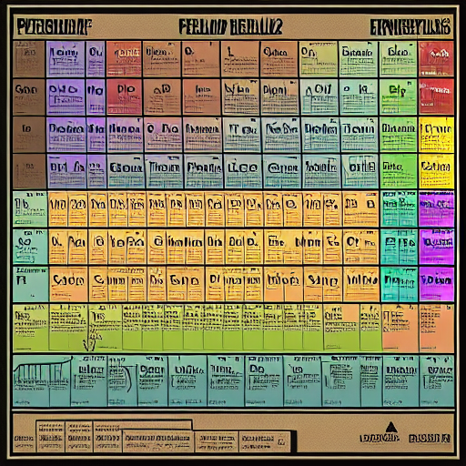
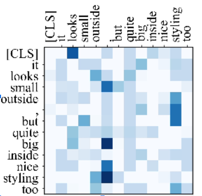
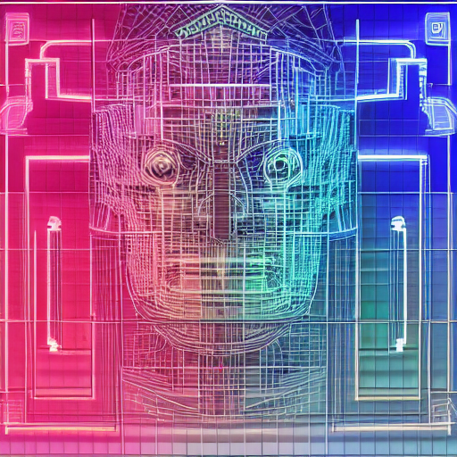
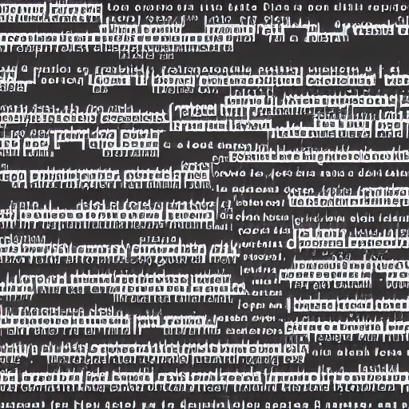

Guía para aprender cómo funcionan las redes neuronales que procesan textos y cómo se programan
Esta guía propone una camino para entender cómo funciona realmente la red neuronal más usada en el campo del procesamiento del lenguaje natural (conocida como transformer). Se siguen para ello las explicaciones teóricas de algunos de los capítulos de un buen libro sobre la materia. Se va aprendiendo sobre la marcha (si es necesario) el lenguaje de programación Python, así como los elementos básicos de una librería llamada PyTorch que permite, entre otras cosas, programar redes neuronales que se entrenen y ejecuten sobre GPUs. A continuación, se estudia una implementación ya existente del transformer programada con PyTorch. El objetivo último es poder modificar este código para experimentar con algún problema sencillo que implique el uso del lenguaje humano. La idea es obtener un buen conocimiento que permita afrontar tareas más complejas más adelante y no tanto desarrollar algo llamativo que enseñar a todo el mundo desde el primer momento.
Algunos aspectos los puedes ir estudiando en paralelo. A la vez que aprendes sobre modelos neuronales, puedes ir iniciándote en Python, NumPy e incluso PyTorch, una vez vistos los dos anteriores. También puedes repasar en paralelo los elementos de álgebra y cálculo que hayas olvidado. El estudio del código del transformer no deberías abordarlo hasta tener bien asimilados todos los conceptos anteriores.
Para entender a nivel matemático y conceptual las redes neuronales nos vamos a basar en la tercera edición (todavía inacabada) del libro “Speech and Language Processing” de Dan Jurafsky y James H. Martin. Los siguientes apartados indican qué capítulos y secciones son relevantes para nuestros propósitos. Importante: dado que la versión en línea del libro está inacabada y se actualiza de vez en cuando no solo con nuevos contenidos, sino también con reestructuraciones de los ya existentes y movimientos de secciones de un capítulo a otro, en esta guía se incluyen enlaces y referencias a una versión del libro alojada en Internet Archive que probablemente no se corresponde con la más actual.
En principio, escribir un programa que explote modelos basados en aprendizaje automático es muy sencillo. Por ejemplo, las siguientes líneas de código usan un modelo transformer para continuar un texto dado:
from transformers import pipeline
generator = pipeline('text-generation', model = 'gpt2')
generator("Hello, I'm a language model and", max_length = 30, num_return_sequences=3)Aunque la existencia de librerías de alto nivel es sumamente importante en ciertos contextos, si solo usas el código anterior:
Esta guía pretende ayudarte a abrir la caja y ser capaz de observar su interior con conocimiento de causa.
8 horas
Nuestros primeros pasos por el camino de baldosas amarillas nos llevan al hermano pequeño de la familia de redes neuronales: el regresor logístico, al que, en general, ni siquiera se considera una red neuronal. Por el camino, aprenderás muchos elementos del aprendizaje automático que luego seguirán aplicándose a modelos más complejos. Comienza, por tanto, con el capítulo “Logistic Regression”
Casi la totalidad del capítulo es muy relevante para nuestros propósitos al tratarse de un capítulo introductorio, pero puedes saltarte lo siguiente:
Un aspecto básico del entrenamiento de redes neuronales es el principio de estimación por máxima verosimilitud. La explicación del capítulo sobre este método puede complementarse con este breve tutorial
Este capítulo es probablemente el más complejo de todos y el que ofrece una mayor curva de aprendizaje.
Puedes empezar a aprender Python y PyTorch siguiendo los enlaces que hay más abajo en esta página. No es necesario que lo hayas hecho antes de pasar al siguiente capítulo del libro, pero recuerda estudiar los dos programas relacionados con este bloque (un regresor logístico para un problema de clasificación de dos clases y un regresor softmax para clasificar dígitos) que se listan en la sección de PyTorch cuando lo hayas hecho.
Observa que en la ecuación 5.12 el vector \(\mathbf{b}\) se obtiene copiando repetidamente el valor escalar \(b\). Cuando ecuaciones como esta se implementan en PyTorch, no es necesario hacer esta copia explícita gracias al mecanismo de broadcasting que se activa automáticamente en algunas ocasiones cuando se combinan tensores de tamaños en principio incompatibles:
import torch
b = 10
X = torch.tensor([[1,2,3],[4,5,6]])
w = torch.tensor([-1,0,1])
yp = torch.matmul(X,w) + bConsidera el caso en que el que un suceso \(x\) puede ocurrir con una probabilidad \(p_x\) modelada mediante una determinada distribución de probabilidad $p$. Supongamos que queremos calcular la cantidad de información \(I(x)\) de dicho suceso o, en palabras más sencillas, la sorpresa que nos produciría que este suceso tuviera lugar. Como primera aproximación, es fácil ver que la inversa de la probabilidad, \(1/p_x\), da un valor mayor cuando la probabilidad es pequeña (nos sorprende más que ocurra algo improbable) y un valor menor cuando la probabilidad es mayor (nos sorprende poco que ocurra algo muy probable).
Además, parece lógico que la cantidad de información de un suceso seguro (con probabilidad 1) sea 0. Para conseguirlo, dado que el logaritmo es una función monótona creciente, podemos aplicar el logaritmo al cociente anterior sin que cambie el orden relativo de dos sucesos con diferentes probabilidades:
\[I(x) = \log\left(\frac{1}{p_x}\right) = - \log (p_x)\]La cantidad de información se mide en bits si el logaritmo es en base 2 y en nats si es en base \(e\). La entropía \(H\) de la distribución de probabilidad es una medida de la información promedio de todos los posibles sucesos. Para obtenerla basta con ponderar la información de cada suceso por su probabilidad y sumar sobre todos los sucesos:
\[H(p) = - \sum_{x} p_x \log(p_x)\]Comprueba que la entropía es máxima si todos los sucesos son equiprobables. La entropía cruzada entre dos distribuciones de probabilidad mide la sorpresa que nos provoca un determinado suceso si usamos una distribución de probabilidad $q$ alternativa a la probabilidad real $p$:
\[H(p,q) = - \sum_{x} p_x \log(q_x)\]Puedes ver, por lo tanto, que la fórmula 5.21 del libro coincide con la ecuación anterior: maximizar la verosimilitud respecto a los parámetros del modelo es equivalente a minimizar la entropía cruzada \(H(y,\hat{y})\).
Estos ejercicios te permitirán repasar los conceptos más importantes de este capítulo.
4 horas
Hasta este momento, a la hora de representar palabras o frases hemos usado características (features) que nos han permitido trabajar de forma matemática con elementos lingüísticos. Estas características, sin embargo, son relativamente arbitrarias y exigen un esfuerzo por nuestra parte en su definición. Sin embargo, existe, como vamos a ver ahora, una manera más fundamentada para representar palabras con números que no requiere supervisión humana. Los embeddings incontextuales se explican en el capítulo “Vector Semantics and Embeddings”
Puedes pasar más o menos rápido por las secciones 6.1 a 6.3, ya que son meramente descriptivas. Lee con detenimiento la sección 6.4 sobre la similitud del coseno. Sáltate directamente las secciones 6.5 a 6.7. Céntrate sobre todo en la sección 6.8 (“Word2vec”). Lee con menos detenimiento las secciones 6.9 a 6.12.
Consideremos el caso en el que tenemos un mini-batch de palabras objetivo representadas por sus embeddings $\mathbf{w}_1,\mathbf{w}_2,\ldots,\mathbf{w}_E$. Para cada palabra objetivo anterior, tenemos una palabra contextual asociada en el conjunto $\mathbf{c}_1,\mathbf{c}_2,\ldots,\mathbf{c}_E$. Para simplificar, no consideramos las muestras negativas, pero el análisis que vamos a hacer es totalmente extensible al caso en el que se incluyan.
Sea $N$ el tamaño de los embeddings. Queremos calcular el producto escalar de cada $\mathbf{w}_i$ con cada $\mathbf{c}_i$, cálculo este que ya has visto que es fundamental en el entrenamiento y uso de los modelos de skip-grams. Para obtener estos productos escalares usando PyTorch y beneficiarnos de la eficiencia de las operaciones matriciales calculadas en GPUs, podemos empaquetar por filas los embeddings de las palabras objetivo en una matriz $A$ de tamaño $E \times N$ y los embeddings de las palabras contextuales por columnas en una matriz $B$ de tamaño $N \times E$. Si calculamos el producto $A \cdot B$ obtendremos una matriz de tamaño $E \times E$ en la que cada elemento $i,j$ es el producto escalar de $\mathbf{w}_i$ con $\mathbf{c}_j$.
Sin embargo, nosotros solo estamos interesados en una pequeña parte de todos estos productos escalares. En concreto, aquellos que forman parte de la diagonal del resultado, que serán los de la forma $\mathbf{w}_i$ $\mathbf{c}_i$. La multiplicación de matrices es muy ineficiente en este caso para nuestros propósitos, pero si buscamos en la documentación de PyTorch no encontraremos en principio una operación que se ajuste exactamente a nuestros intereses.
Existe, sin embargo, en PyTorch una manera eficiente y compacta de definir operaciones matriciales basada en la notación de Einstein, de la que puedes aprender un poco leyendo hasta el apartado 2.8 aproximadamente del tutorial “Einsum is all you need” . En particular, podemos observar que nos interesa obtener un vector $\mathbf{d}$ tal que:
\[\mathbf{d}_i = \mathbf{w}_i \cdot \mathbf{c}_i = \sum_{j} \mathbf{w}_{i,j} \, \mathbf{c}_{j,i}\]Usando la notación de Einstein con la función de PyTorch einsum, podemos escribir la operación matricial anterior y obtener el tensor unidimensional que queremos como sigue:
d = torch.einsum('ij,ji->i', A, B)
En la sección de PyTorch puedes encontrar un programa que obtiene embeddings mediante el algoritmo skip-gram. No es necesario que entiendas este código antes de pasar al siguiente capítulo del libro, pero recuerda estudiarlo cuando lo hayas hecho. Llegados a este punto, no obstante, va siendo recomendable que comiences a familiarizarte con el uso de PyTorch, quizás en paralelo al estudio del próximo bloque.
Al buscar relaciones de analogía entre word embeddings intentamos, dadas las palabras A y B (relacionadas entre ellas), encontrar en el espacio de embeddings dos palabras, C y D (también relacionadas tanto entre ellas como con A y B) para los que tenga sentido afirmar que “A es a B como C es a D”. Matemáticamente, se trata de encontrar cuatro palabras cuyos embeddings cumplan ciertas propiedades geométricas basadas en las distancias entre sus vectores. Por ejemplo, es habitual observar que estas propiedades se cumplen si A=man, B=woman, C=king y D=queen (diremos que “man es a woman como king es a queen”). Supongamos que hemos obtenido mediante el algoritmo skip-gram unos embeddings de palabras para el inglés que permiten encontrar este tipo de analogías. Considera la lista de palabras L = {planes, France, Louvre, UK, Italy, plane, people, man, woman, pilot, cloud}. Indica con qué palabra de la lista L tiene más sentido sustituir @1, @2, @3, @4, @5 y @6 en las siguientes expresiones para que se cumplan las analogías:

6 horas
Tras las introducciones anteriores, estamos ahora preparados para abordar el estudio del modelo básico de red neuronal conocido como red neuronal hacia delante (feed-forward neural network) en el capítulo “Neural Networks and Neural Language Models” . En la mayoría de las tareas actuales de procesamiento del lenguaje natural no usaremos arquitecturas tan sencillas, pero las redes feed-forward aparecen como componente en los modelos avanzados basados en la arquitectura transformer que veremos más adelante.
Todo el capítulo es relevante, aunque probablemente se hable de cosas que ya conoces. Puedes saltar o leer con menos detenimiento las secciones 7.6.3 (“Computation Graphs”) y 7.6.4 (“Backward differentiation on computation graphs”).
En la sección de PyTorch puedes encontrar un programa muy corto que entrena y usa un modelo de lengua con redes feedforward como el estudiado en este bloque.
8 horas
Ahora sí podemos acometer el estudio de los elementos básicos de la arquitectura transformer siguiendo el capítulo “Deep Learning Architectures for Sequence Processing” . Aquí entenderás qué significa una de las ecuaciones más importantes de los últimos años dentro del aprendizaje automático
Salta las secciones 9.2 a 9.6, que se centran en otro modelo alternativo para el procesamiento de secuencias, las redes neuronales recurrentes, que se han venido usando menos en el área del procesamiento del lenguaje natural tras la llegada del transformer.
Un factor que puede parecer arbitrario en la ecuación de la atención es la división por la raíz cuadrada de la dimensión de la clave. Para entender la motivación de esta operación, observa que cuanto mayor es el tamaño de los embeddings, mayor es el resultado de cada producto escalar $q_i k_j$. El problema es que cuando la función softmax se aplica a valores muy altos, su carácter exponencial hace que asigne valores muy pequeños a todos los elementos excepto al que tiene el valor más alto. Es decir, cuando la función softmax se satura, tiende a un vector one-hot. Esto provocará que la atención se centre en un único token e ignore el resto, lo que no es un comportamiento deseable.
Consideremos que $Q$ y $K$ tienen tamaño $B \times T \times C$, donde $C$ es el tamaño de las consultas y las claves. Para simplificar, si asumimos que los elementos de las matrices $Q$ y $K$ tienen varianza alrededor de 1, la varianza de los elementos del producto será del orden de $C$. Como se cumple que, dado un escalar $m$, $\mathrm{var}(mX) = m^2 \mathrm{var}(x)$, al multiplicar cada elemento por $1 / \sqrt{C}$, la varianza del producto matricial se reduce en $\left(1 / \sqrt{C}\right)^2 = 1 / C$. Por tanto, si la varianza de los elementos de $Q$ y $K$ es 1, ahora la varianza del producto matricial también estará alrededor de 1.
El siguiente código permite comprobar los extremos anteriores:
import torch
B, T, C = 10, 10, 5000
m = 1
Q = torch.randn(B, T, C)*m
K = torch.randn(B, T, C)*m
print(f'Variance of Q: {Q.var().item():.2f}')
print(f'Variance of K: {K.var().item():.2f}')
# variances close to m**2
QK = Q.matmul(K.transpose(-2, -1))
print(f'Variance of QK: {QK.var().item():.2f}')
# very high variance close to C*(m**4)!
s = torch.softmax(QK, dim=-1)
torch.set_printoptions(precision=2)
print(f'Mean value of highest softmax: {s.max(dim=-1)[0].mean().item():.2f}')
# max value of each channel close to 1
QK = QK / (C ** 0.5)
print(f'Variance of QK after normalization: {QK.var().item():.2f}')
# variance close to m**4
s = torch.softmax(QK, dim=-1)
print(f'Mean value of highest softmax: {s.max(dim=-1)[0].mean().item():.2f}')
# max value of each channel smaller than 1
En general, si la varianza de los elementos de $Q$ y $K$ es $m$, la varianza del producto matricial estará alrededor de $m^4 C$. Si $m=2$, por ejemplo, la normalización no nos deja elementos con varianza de 1, pero sí la reduce para dejarla en el orden de $m^4 = 16$.
La siguiente fórmula para el cálculo de la auto-atención en el descodificador de un transformer es ligeramente distinta a la habitual, ya que se ha añadido explícitamente la máscara que impide que, como hemos visto, la atención calculada para un token durante el entrenamiento tenga en cuenta los tokens que se encuentran posteriormente en la frase:
\[\text{Atención}(Q,K,V,M) = \text{softmax} \left( \frac{Q K^T + M}{\sqrt{d_k}} \right) \, V\]Indica qué forma tiene la matriz de máscara $M$. Busca las operaciones de PyTorch que te permiten inicializar dicha matriz. Si necesitas usar valores de infinito en el código, razona si es suficiente con utilizar un número grande como $10^9$.
Supongamos que el embedding no contextual almacenado en la tabla de embeddings del codificador de un transformer para un determinado token viene definido por el vector $\mathbf{e} = \mathbf{e}_1, \mathbf{e}_2, \ldots, \mathbf{e}_n$. Consideremos el caso en el que dicho token aparece en dos posiciones diferentes de una frase de entrada. Si no se utilizaran embeddings posicionales, ¿cuál sería el valor del coseno entre los vectores de los dos embeddings no contextuales usados para el token? Llamemos ahora $\mathbf{p}$ y $\mathbf{p}’$ a los embeddings posicionales que se utilizan en cada una de las dos apariciones del token. El coseno del ángulo entre los vectores resultantes de sumar al embedding e los embeddings posicionales sería:
\[\cos(\alpha)=\frac{\sum_{i=1}^d(\mathbf{e}_i+\mathbf{p}_i)(\mathbf{e}_i+\mathbf{p}'_i)}{\sqrt{\left(\sum_{j=1}^d(\mathbf{e}_j+\mathbf{p}_j)^2\right)\left(\sum_{j=1}^d(\mathbf{e}_j+\mathbf{p}_j')^2\right)}}\]¿A qué valor se irá acercando el coseno anterior cuando la distancia que separa las dos apariciones del token en la frase vaya aumentando? Razona tu respuesta.
Una matriz de atención como la de la figura siguiente representa en cada fila el nivel de atención que se presta a los embeddings calculados para cada token de la frase en la capa anterior (representados en las columnas) cuando se va a calcular el embedding del token de dicha fila en un determinado cabezal (head) del codificador de un transformer. Un color más oscuro representa mayor atención. Así, puedes ver que a la hora de calcular el nuevo embedding de big en la fila novena, la mayor parte de la atención se coloca sobre los embeddings anteriores de la coma (sexta columna) y de looks (tercera columna), y que se reserva algo de atención para small, quite y too.

Considera ahora un cabezal (head) de un codificador de un transformer que presta una atención aproximadamente monótona sobre los embeddings de la capa anterior. En particular, para cada token se atiende en un elevado grado al embedding de ese mismo token en la capa anterior y con mucha menor intensidad al token inmediatamente a su derecha; el resto de embeddings de la capa anterior no reciben atención. Dibuja aproximadamente la matriz de atención resultante sobre la misma frase que la de la figura.
4 horas
En el bloque anterior, hemos estudiado todos los elementos del transformer, pero en aplicaciones en las que una secuencia de tokens se transforma en otra secuencia de tokens, las capas del transformen se asocian a dos submodelos bien diferenciados y conectados entre ellos mediante mecanismos de atención: el codificador y el descodificador. El capítulo “Machine translation” se centra en la arquitectura completa. En este capítulo solo es necesario que estudies las secciones 10.2 y 10.6.
En la sección de PyTorch puedes encontrar una implementación de la arquitectura del transformer que hemos estudiado en este bloque. A estas alturas, ya deberías estar dedicando tiempo a estudiar las implementaciones de los modelos, pero recuerda empezar por las más sencillas de bloques anteriores.
Hay algunos elementos adicionales a la definición de los diferentes modelos neuronales que son también relevantes cuando estos se aplican en el área del procesamiento del lenguaje natural.
3 horas
El capítulo “Transfer Learning with Contextual Embeddings and Pre-trained language models” estudia los modelos preentrenados y cómo adaptarlos a nuestras necesidades. Este material puede ser opcional o incluso innecesario para ti; consulta con el profesor. En el caso de que abordes su estudio, pueden ser relevantes la introducción y las secciones 11.1 y 11.2.
Ejemplo de una nota al margen.
Para ampliar conocimientos, puedes consultar estos libros que, en su mayoría, están disponibles en la web:
La siguiente lista contiene enlaces a algunos cursos en vídeo impartidos por investigadores o universidades reconocidos:

6 horas
Python es a día de hoy el lenguaje de programación más usado en el mundo del procesamiento del lenguaje natural. Para entender y modificar el código del transformer necesitarás conocer los elementos fundamentales del lenguaje. Se trata de un lenguaje dinámico, pero probablemente no se parecerá mucho a otros lenguajes de este tipo que conozcas. Pese a ello, no tiene sentido que aprendas Python desde cero, ya que muchos elementos básicos del lenguaje (bucles, funciones, clases, etc.) no se alejan mucho de los que ya conoces para otros lenguajes.
Los cursos de aprendizaje automático suelen incluir una introducción a Python para programadores experimentados en otros lenguajes. En este área es también muy frecuente usar librerías para cálculo científico como NumPy. Aunque nosotros usaremos librerías más específicas como PyTorch, esta comparte muchos principios de diseño con NumPy, por lo que es recomendable que aprendas algo de NumPy también.
Sigue estos tutoriales. Usa más de una fuente para así aprender más:
Cuando necesites profundizar o entender ciertas estructuras de Python, puedes consultar la documentación oficial de Python.
El uso de los cuadernos de Jupyter y de Google Colab se explica en los apartados 20.1 (“Using Jupyter Notebooks” ) y 20.4 (“Using Google Colab” ) del libro de “Dive into Deep Learning”.
8 horas
PyTorch no es en principio una librería sencilla de entender. Al estudiar de primeras el código de un modelo neuronal programado en PyTorch, es posible que no entiendas ciertas partes o que no seas capaz de deducir todo el comportamiento implícito subyacente. Es por ello que un esfuerzo inicial de estudio de la librería es necesario.
Puedes hacerte una idea somera de los fundamentos de PyTorch siguiendo la breve introducción a PyTorch que se incluye como parte del libro “Dive into Deep Learning”; observa que puedes ver los ejemplos de PyTorch en la página web, pero también abrir un cuaderno en Colab o en SageMaker Studio Lab. Sin embargo, como se ha mencionado, necesitarás ahondar más en los entresijos de la librería: sigue para ello el tutorial en vídeo de más de 2 horas de esta playlist oficial de PyTorch. Mírate al menos los 4 primeros vídeos (“Introduction to PyTorch”, “Introduction to PyTorch Tensors”, “The Fundamentals of Autograd” y “Building Models with PyTorch”).
Como complemento a lo anterior, puedes consultar también el tutorial oficial de PyTorch. Asegúrate de seleccionar tu versión de PyTorch en la esquina superior izquierda. Es especialmente didáctico este corto tutorial con ejemplos sencillos de ajuste de la función $a +bx + cx^2 + dx^3$. Finalmente, cuando necesites profundizar en algún elemento particular de PyTorch, puedes recurrir a la documentación oficial de PyTorch .
Estas son algunos implementaciones en PyTorch de los modelos que hemos estudiado en unas pocas decenas de líneas de código (normalmente menos de 100). Asegúrate de que terminas entendiendo el código lo suficiente como para sentirte con ánimo de poder modificarlo para adaptarlo a otras necesidades.
Una operación frecuente en PyTorch es la de desestrujamientounsqueeze. Esta operación añade una dimensión de tamaño 1 en la posición indicada. Por ejemplo, si tenemos un tensor de forma (2,3,4) y aplicamos unsqueeze(1), el resultado será un tensor de forma (2,1,3,4). Si aplicamos unsqueeze(0), el resultado será un tensor de forma (1,2,3,4). Si aplicamos unsqueeze(-1), el resultado será un tensor de forma (2,3,4,1). Uno de los usos más típicos de unsqueeze es convertir un dato simple en un minibatch. Por ejemplo, imagina que tenemos un modelo de asignación de categorías léxicas (verbo, nombre, adjetivo, etc.) a palabras que recibe un minibatch de embeddings de diferentes palabras y nos devuelve para cada palabra un vector de probabilidades de asignación a cada categoría. Si queremos aplicar el modelo a una sola palabra, necesitamos convertir su embedding en un minibatch de un solo elemento y, para ello, podemos usar unsqueeze(0). Si suponemos que el número de categorías es 10, tras ejecutar el modelo, el resultado será un tensor de forma (1,10), que podemos convertir en un tensor de forma (10) con squeeze(0). La operación squeeze es el complemento de unsqueeze: por defecto, elimina todas las dimensiones de tamaño 1, pero permite indicar la posición de la dimensión que queremos eliminar.
Añadir una dimensión de tamaño 1 en la posición indicada, como hace squeeze no afecta al número de elementos del tensor, pero sí a su forma. El bloque de datos que contiene el tensor no se modifica en memoria. El siguiente ejemplo, muestra el resultado de operaciones de desestrujamiento sobre diferentes posiciones:
import torch
a=torch.tensor([[1,2],[3,4]]) # [ [ 1, 2 ], [ 3, 4 ] ] 2x2
a.squeeze(0) # [ [ [ 1, 2 ], [ 3, 4 ] ] ] 1x2x2
a.squeeze(1) # [ [ [ 1, 2 ] ], [ [ 3, 4 ] ] ] 2x1x2
a.squeeze(2) # [ [ [ 1 ], [ 2 ] ], [ [ 3 ], [ 4 ] ] ] 2x2x1
a.squeeze(3) # exception: dimension out of rangeComo es habitual en PyTorch, las dimensiones pueden ser negativas, lo que permite indicar la posición de la dimensión contando desde el final. En el ejemplo anterior, a.squeeze(-1) es equivalente a a.squeeze(3). En términos de la función view, t.squeeze() es equivalente a view(*[s for s in t.shape if s != 1]). Por otro lado, t.unsqueeze(i) equivale a view(*t.shape[:i], 1, *t.shape[i:]).
Observar un tensor $n$-dimensional como una lista de tensores $(n-1)$-dimensionales facilita la comprensión de la representación de tensores en PyTorch. Te resultará probablemente más sencillo visualizar un tensor 5-dimensional como una lista de tensores de 4 dimensiones (y así sucesivamente) que como una matriz de cubos, por ejemplo.
La operación squeeze nos ayuda también a aclarar la diferencia entre la representación de vectores, vectores fila y vectores columna en PyTorch. Para empezar, considera estos dos tensores:
a=torch.tensor([[1,2],[3,5]])
b=torch.tensor([2,3])El tensor a se corresponde con una matriz de 2x2 y b con un vector de 2 elementos. La operación torch.mm(a,b) produce un error porque los tamaños son incompatibles, ya que esta operación no hace broadcasting y solo funciona sobre dos matrices. Podemos transformar b en un vector columna [[2],[3]] de 2x1 con ayuda de unsqueeze para que torch.mm(a,b.unsqueeze(1)) funcione correctamente. También podemos transformar b en un vector fila [[2,3]] de 1x2 con ayuda de unsqueeze para que torch.mm(b.unsqueeze(0),a) funcione correctamente. Observa que el resultado de ambos productos es evidentemente distinto (los tensores resultantes, de hecho, tienen formas diferentes). Podemos usar ahora squeeze sobre el resultado para obtener un vector de 2 elementos.
La operación torch.matmul no solo soporta broadcasting, sino que está preparada para operar con tensores bidimensionales y unidimensionales. El resultado es en este caso un tensor unidimensional. Las siguientes dos aserciones, por tanto, no fallan:
assert torch.equal(torch.mm(b.unsqueeze(0),a).squeeze(), torch.matmul(b,a))
assert torch.equal(torch.mm(a,b.unsqueeze(1)).squeeze(), torch.matmul(a,b))Consideremos, para simplificar, una matriz de 4x3 inicializada como sigue:
a = torch.tensor([[1,2,3],[4,5,6],[7,8,9],[10,11,12]])En memoria, los elementos de un tensor como el anterior se almacenan en posiciones consecutivas siguiendo un orden por filas, por lo que estos se encuentran dispuestos como 1, 2, 3, 4, 5, 6, 7, 8, 9, 10, 11, 12. El orden de almacenamiento de los elementos de un tensor se caracteriza mediante un concepto denominado stride (que podemos traducir por salto o paso) que se puede consultar con el método stride:
print(a.stride()) # (3, 1)La tupla (3,1) indica que para avanzar en la primera dimensión (las filas) de un elemento al siguiente es necesario saltar 3 posiciones en memoria y que para avanzar en la segunda dimensión (las columnas) de un elemento al siguiente es necesario saltar 1 posición en memoria.
Hay operaciones de PyTorch (por ejemplo, la traspuesta o la función view) que modifican los pasos de los tensores sin mover los elementos en memoria, lo que hace que la operación sea muy eficiente al no tener que crear nuevos valores en memoria o reordenar los existentes:
t = a.t()
print(t.stride()) # (1, 3)Comprueba que los pasos (1, 3) son los correctos si no se han modificado los datos en memoria. Muchas operaciones de PyTorch están implementadas de manera que van iterando por los datos desde la última dimensión a la primera (primero por columnas y luego por filas, por ejemplo), esperando que esto suponga comenzar por las dimensiones de paso más pequeño (columnas, en nuestro caso) e ir moviéndose hacia dimensiones con pasos menores. De esta forma, cuando el algoritmo accede al siguiente dato, este suele ser un vecino del actual y estará probablemente disponible en caché. Si los elementos estuvieran dispuestos de otra manera en memoria, el algoritmo tendría que saltar más posiciones en memoria para acceder a los datos y, por tanto, sería más lento o directamente no funcionaría. Por ello, en ocasiones algunas operaciones (por ejemplo, t.view(-1)) lanzan una excepción y tendremos que reordenar explícitamente los datos en memoria del tensor afectado antes de poder usar dicha operación:
print(a.is_contiguous()) # True
print(t.is_contiguous()) # False
print(a.data_ptr()==t.data_ptr()) # True
t = t.contiguous()
print(t.stride()) # (4, 1)
print(a.data_ptr()==t.data_ptr()) # FalseLa operación contiguous devuelve el tensor de entrada (self) si este ya es contiguo y devuelven una copia con los datos reorganizados en caso contrario. Para tensores contiguos de cualquier forma, el paso es siempre mayor en una dimensión dada que en la siguiente:
x= torch.ones((5, 4, 3, 2))
print(x.stride()) # (24, 6, 2, 1)Hay dos formas diferentes de interactuar con la librería Matplotlib. Probablemente te encontrarás con ambos estilos en el código que encuentres en la web, por lo que es importante conocerlos. La primera forma (implícita) es la más sencilla y consiste en importar la librería y llamar a sus funciones de forma directa. La segunda forma es la más completa y consiste en crear un objeto Figure y llamar a sus métodos usando los objetos devueltos para interactuar con la librería. En ambos casos, se trabaja internamente con una figura y uno o más marcos asociados (en inglés axes, pero no confundir con los ejes o axis de un marco), pero en el primer caso se mantiene un estado global por lo que no es necesario usar explícitamente los distintos objetos y basta con llamar a la funciones directamente.
Este es un ejemplo de código que usa la forma implícita:
import matplotlib.pyplot as plt
import numpy as np
x = np.linspace(0, 2 * np.pi, 400)
y = np.sin(x ** 2)
plt.figure()
plt.subplots()
plt.suptitle('Sinusoidal function')
plt.plot(x, y)
plt.show()Y este es un ejemplo de la forma explícita:
import matplotlib.pyplot as plt
import numpy as np
x = np.linspace(0, 2 * np.pi, 400)
y = np.sin(x ** 2)
fig = plt.figure()
ax = fig.subplots()
fig.suptitle('Sinusoidal function')
ax.plot(x, y)
fig.show()
6 horas
Con todo el trabajo anterior, estamos en predisposición de abordar el estudio de la implementación “real”, sencilla pero completa, de la arquitectura transformer del documento “The Annotated Transformer” . Comienza entendiendo muy bien la parte 1.
El proyecto MinT incluye diferentes tutoriales con implementaciones desde cero de modelos tipo BERT, GPT, BART o T5. El código es ligeramente más extenso que el que hemos estudiado, pero puede servir para afianzar conocimientos en una fase avanzada. El proyecto x-transformers sigue un enfoque similar.
Existe un tutorial en la documentación de PyTorch que explica un código de alto nivel para usar transformers en traducción automática.
Los elementos básicos de álgebra, cálculo y probabilidad necesarios para manejarte con soltura en el mundo del procesamiento del lenguaje natural los puedes encontrar en las secciones “Linear Algebra”, “Calculus” (junto con “Automatic differentiation”) y “Probability and Statistics” del capítulo 2 del libro “Dive into Deep Learning”. Otros como la teoría de la información (19.11) o el principio de máxima verosimilitud (19.7) se abordan en un apéndice del mismo libro.